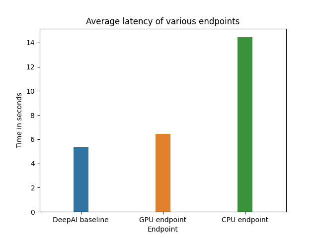

Stylify
The Team
- Daniel Tan
- Noah Jacobson
- Jiatu Liu
Problem Definition
Where photography is limited by its reliance on reality, art transcends the confines of the physical world. At the same time, art is a highly technical skill, relying on fine motor control and knowledge of materials to put one’s mental image to paper. Professional artists must study for years and hone their technical skills through repeated projects. As a result, while everyone has the capacity for creativity, far fewer have the ability to materialize their imagination on the canvas.
We seek to bridge this gap with Stylify, our application for neural style transfer. With our app, anyone can create original art by combining the characteristics of multiple existing images. Everybody has an innate aesthetic sense; a latent capacity for art. Our lofty ambition is to allow the human mind to fully embrace its creativity by giving form to abstract thought.
Implementation-wise, our application is backed by a state-of-the-art neural style transfer model. Whereas previous style transfer models are trained to learn a finite number of styles, our model is able to extract the style of arbitrary images, providing true creative freedom to end users. Our model is also extremely efficient. Where previous style transfer models arrive at the output by iterated minimization, requiring many forward passes, our model requires only a single forward pass through the architecture, saving time and compute resources. The fully-convolutional architecture also means that images of any size can be stylified.
System Design
Our system consists of 4 main components:
- A ReactJS frontend, which provides the interface for end users to interact with our application
- An API endpoint deployed using Sagemaker. It provides access to the style transfer model, which accepts batches of content and style images and returns an image with the content of the former and the style of the latter
- A Python middleman server, which performs preprocessing on the inputs sent by the frontend, and queries the model through the endpoint. In order to support video input, the server unpacks videos into component frames and makes a batch query to the endpoint.
- An S3 bucket which is used for temporary file storage as well as logging of metrics
Our system is summarized below.

The frontend is a web application, enabling access by a wide variety of devices such as smartphones, tablets, and computers. It is implemented using ReactJS + TypeScript, which is the modern industry standard for frontend web development. Additionally, Material-UI is used as it provides access to many off-the-shelf UI components. The frontend is deployed and managed through AWS Amplify, which transparently hosts the frontend server on AWS. It also automatically deploys the frontend server when it detects code changes in the repo.
The endpoint is deployed using AWS Sagemaker. Compared to manually spinning up a virtual machine to deploy our model, Sagemaker is superior as it automatically handles increasing scale by spawning new instances to perform inference as necessary. Behind the scenes, it also takes care of many minor implementation details such as automatically restarting instances when they fail.
The server is implemented in Python. Python was chosen because of its wide support for efficient image processing (OpenCV) as well as support for an efficient asynchronous server (FastAPI). The availability of off-the-shelf components minimized development time spent on the server. The server code makes heavy use of asynchronous directives (AsyncIO), as synchronous code would lead to large amounts of idle CPU time spent waiting for network communications. The server is deployed on AWS ECS with the Fargate launch type.
While images are passed between the frontend and server as a stream of raw bytes, the server sends requests to the endpoint in the form of a list of URLs to the content and style images, and the endpoint replies with a list of output URLs. All URLs point to an S3 bucket where images are stored temporarily before being destroyed. We store images in S3 buckets rather than sending entire images to the endpoint because the endpoint is not able to handle requests with images in them as those requests would be too long. Using S3 uploads, we are able to process hundreds of images in a single request. Furthermore, fast access to S3 improves the speed of our application as the content and style images can be uploaded to S3 before prediction time and pulled from S3 rapidly.
Lastly, the server maintains a running average of latency for the last 64 queries to the API endpoint and logs this data in an external S3 bucket to facilitate manual inspection.
Machine Learning Component
Our architecture takes as input a single content image, a single style image, and performs a single forward pass over the inputs, producing an output image with the content of the former and the style of the latter. The architecture is summarized below.

Architecture
At a high level, both the style and the content images are passed through a fully-convolutional VGG19 encoder to extract high-level embeddings. Each embedding can be thought of as a 3D grid or feature map with multiple layers. Each vertical slice of the grid forms a 2D grid of numbers (a channel) that represents high-level information about the image, such as whether it contains a face.
Stylification happens through autoencoding and adaptive instance normalization. After being forward passed through the encoder VGG, the embeddings of the content image are transformed linearly so that the mean and standard deviation of each channel match those of the style embedding. Concretely, we have:

The result of this is an output embedding which captures both the spatial structure (content) of the content image, as well as the texture (style) of the style image. This embedding is then converted back into a visual image through a fully-deconvolutional decoder, producing the stylified output.
Model Training
The architecture is trained to perform style transfer by optimizing a combination of a content loss L_c and a style loss L_s.
The content loss is calculated based on the extent to which the outputted image has the same content as the original image and the style loss is based on the extent to which the style of the original image, as represented by the Gram matrix of the image, matches the style of the generated image. By optimizing both of these objectives, our network is able to achieve exceptional and fast performance.
Model Development
We did not do any training or fine-tuning ourselves, finding it sufficient to use a pretrained model implemented in PyTorch. The model was trained using MSCOCO for content images and a Wikiart-derived dataset for style images. Further implementation details can be found in the training code, which is open-source.
We spend a significant portion of time searching for the fastest neural style transfer implementation in the world. The first implementations of NST require backpropagation to be performed for several iterations for every content and style image uploaded to the network. This was incredibly time consuming and it made NST impractical for public use. Future implementations of NST focused on increasing the speed of the algorithm by developing pretrained networks for specific style images. Networks were developed that required only one forward pass for NST to be performed, but these forward passes were only capable of transferring a particular style onto a content image. Now, there exist algorithms like the one above that can perform style transfer between an arbitrary content and style image in a single forward pass. These networks use state-of-the-art advancements such as autoencoders and GANs. Generally speaking, training different networks for different functions (i.e. encoding style, transferring content) leads to the development of super-capable networks that can “learn” from an input in a single forward pass.
System Evaluation
Because of the qualitative nature of domain, it is difficult to evaluate the quality of model output in any objectively meaningful sense. As a result, we have chosen to eschew model evaluation in favour of evaluating the application latency.
We measure the latency by making 15 requests to our endpoint, for various settings. The time taken to receive a response is recorded. We record mean and standard deviation for various choices of runtime. We also include a comparison to a similar publicly-available endpoint available here. Much like our model, the endpoint supports arbitrary user-supplied content and style images. Results are demonstrated in the graph below.

Application Demonstration
Link: https://youtu.be/71R0xiD_TmI
Given that the app is meant for users to upload and stylify their own images, an GUI makes much more sense than an API, since the majority of the users are not going to know how to upload images through an API.
To use the app:
- Go to https://www.stylify.net/. Behold the slick and modern UI, and click on “Edit your photo now”, which will take you to a new screen.
- Click on “Add image” and drop the image or video into the dropzone popup. Click “Submit”.
- Click on “Add filter”, and then either click on the first item in the menu popup to upload your own filter, or choose a predefined filter from the rest of the menu.
- The image will be automatically stylified one the filter is submitted. The “Download” button will be enabled after processing finishes. Click on it to download the stylified image.
- Click on “Do again” if you want to stylify another image.
Reflection
What Worked
- CI/CD is great for projects like this. All of our deployment pipelines are automated via AWS Amplify and Github actions, which means all we need to do to get our changes into production is to merge the code to the
mainbranch. - Logging is a must. Your local environment is going to be different from your production environment, and without logging it’s almost impossible to figure out why something is working locally but not on the cloud.
- FastAPI provided a simple, efficient asynchronous server, which helped minimize development time. Python was a good choice for the server due to the abundance of image processing libraries as well as AWS SDK.
What Didn’t Work So Well
- We struggled to integrate our pretrained models with sagemaker. The first pretrained model we got functioning was not built in a tensorflow version that is compatible with SageMaker, and we had to change libraries entirely.
- We also spent many hours trying to deploy a pretrained PyTorch model through SageMaker’s Jupyter Notebook instances, but we were not able to successfully deploy the model until we changed approaches to uploading the model through the AWS console.
- The S3 upload ended up adding more latency than we thought it would. After some internal testing, we found that the model inference time is less than 1s, but our application can take up to 15s to query a video, largely due to multiple S3 upload and downloads.
Future Improvements
- Process more frames from video inputs. Due to modeling and response time constraints we are only able to process 8 frames of a video input. We could potentially make video processing async if the input exceeds a certain size, and notify the client to come back and download the stylified video after it’s been processed.
- UI-wise, allow users to pick a different filter after the image has been styled, w/o having to go through the entire flow again.
- Instead of displaying just the name, also display a small thumbnail of what the style images look like.
- Build a “premium” version of the app that allows users to upload more/larger photos and videos in order to make up for the larger compute cost.
- Train our own smaller NST model to increase our speed.
- Parallelize video input processing across several GPU instances.
Broader Impacts
Our application enables the world to transform videos using NST for the first time. This creative outlet increases the autonomy of the general non-technical human population in a way that has never been done in history. Our team is not sure of all of the potential implications in this technological shift, but we imagine that the general public will be able to use this technology to create all sorts of abstract creations.
Neural style transfer creates incredibly compelling and beautiful images; there is potential for a whole new area of art to develop based on the application of algorithms to raw inputs, and we view Stylify as an essential tool for these next-generation artists. Up until the invention of Stylify, the public has not been able to utilize the full potential of NST, as transforming a content image would be too tedious and take too long. Now, the public will truly be able to unleash the power of the NST algorithm, and the implications could be world-changing; we anticipate that our tool could provide lasting value to a nontrivial fraction of artists and ordinary people.Photographers could give their pictures a sense of the surreal; Instagram users could create custom filters for bespoke images; budding artists could visualize art drawn in the characteristic style of the historical greats.
It is possible that our application might be used for forgery, seeking to pass off a stylified image as original work by a historical artist. However, considering that technology exists to detect deep fakes, we are confident that state-of-the-art detection algorithms will be able to classify our image as being artificial. Furthermore, despite the efficacy of our model, most humans will be able to see that NST images are not originals.
References
[1] X. Huang and S. Belongie. “Arbitrary Style Transfer in Real-time with Adaptive Instance Normalization.”, in ICCV, 2017.
[2] Pretrained PyTorch style transfer model, adapted from: https://github.com/naoto0804/pytorch-AdaIN
[3] MSCOCO dataset, available at https://cocodataset.org/#overview
[4] Wikiart, a compendium of artistic images used for styling https://www.kaggle.com/c/painter-by-numbers/data
[5] Fast API: https://fastapi.tiangolo.com/
[6] React: https://reactjs.org/
[7] Material UI: https://material-ui.com/